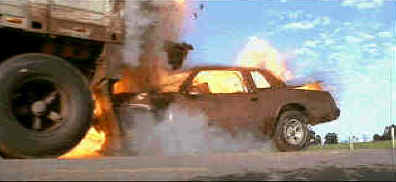

Universal/1998/89m/ANA,WS 2.35
 |
Trucks collide and cars explode. ©Universal |
Mix in an
undercover FBI agent, a kidnapping, and a team of hijackers with seemingly unlimited
resources to juice up the action and that's Black Dog. The cinematography is top
notch keeping the audience right in the middle of the action. Stunt work is outstanding
lending an edge of reality to the otherwise far-fetched plotting.
Patrick Swayzee is convincing behind the wheel, playing Crews
with a buzz cut and a sincere expression. Meat Loaf, the beefy singer/actor provides some
entertaining moments as a bible spouting hijacker with a determination beyond the usual
villain. And country star Randy Travis eases into the passenger seat of Crews' truck with
charm. The actors are backed up in their interstate pursuit by lots of country music. One
wonders what the box office was for this movie in "country" music territory.
Black Dog burns rubber with beautiful images. The outstanding
transfer is highlighted by explosive transitions which light up the screen comfortably
with flaring flames. The sharp images are not over-enhanced. Sound meets the video head on
with terrific surround detail. I felt like debris was falling all over my home theater
during the many car collisions. Black Dog is worth a try. It's exactly what is sets out to
be if your looking for truck muscle with a sense of style.
 ã1998
Stuart J. Kobak , all rights reserved.
ã1998
Stuart J. Kobak , all rights reserved.